Archive
Side quests
I have been making things since long before it was a job. Photos, places, and things that never had a brief.
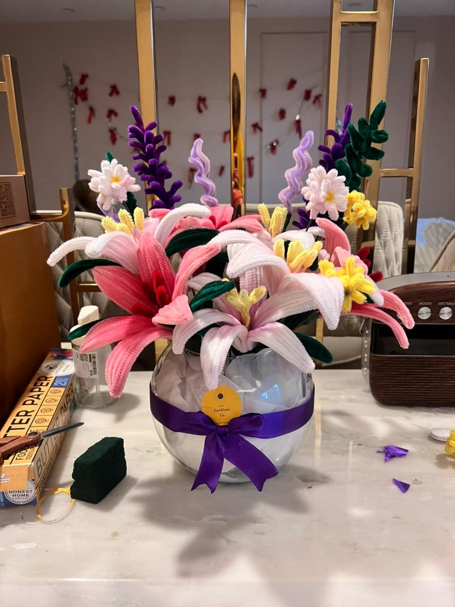
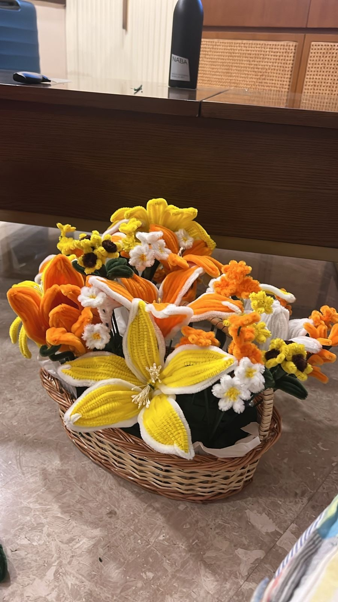
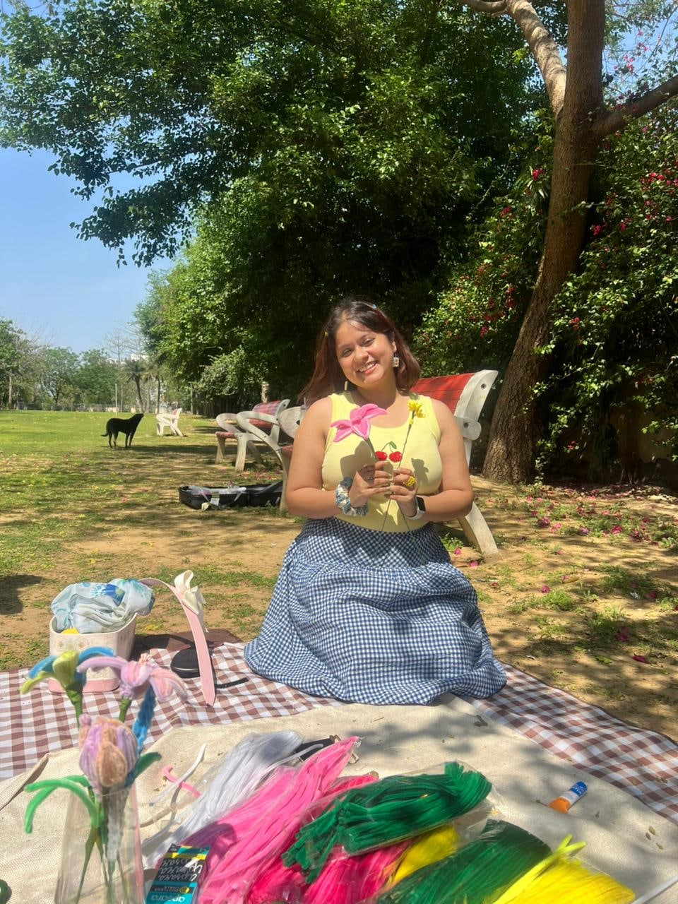
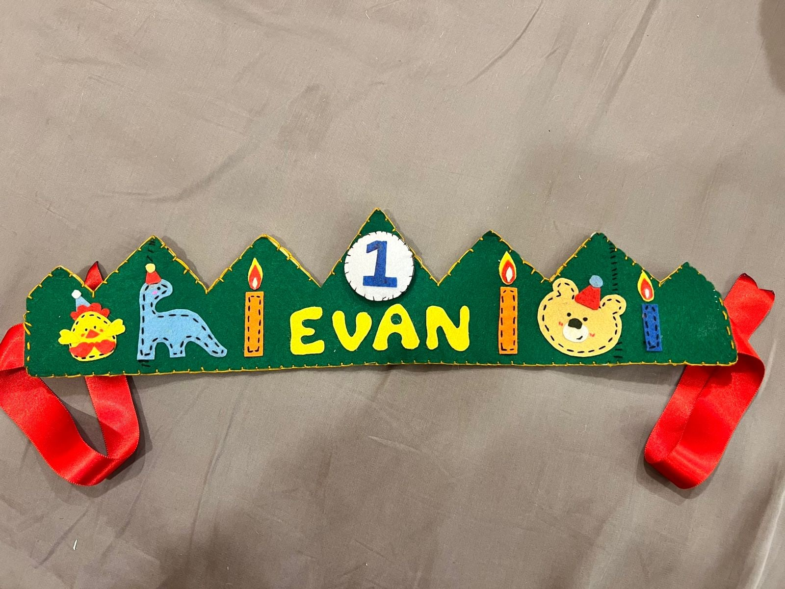
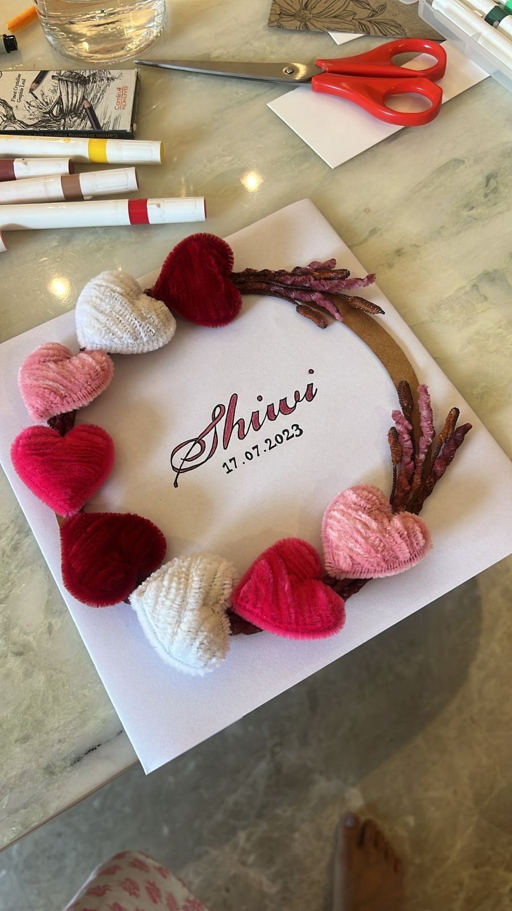
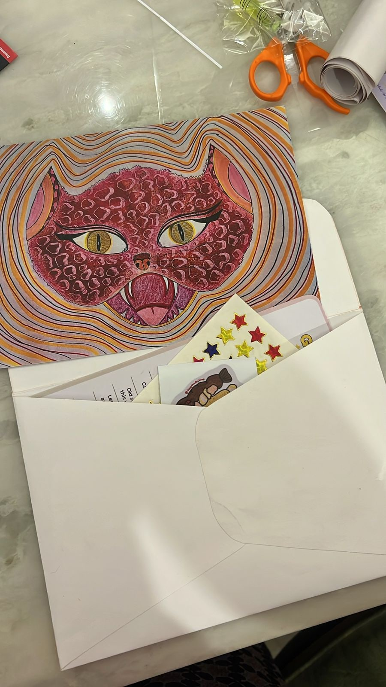
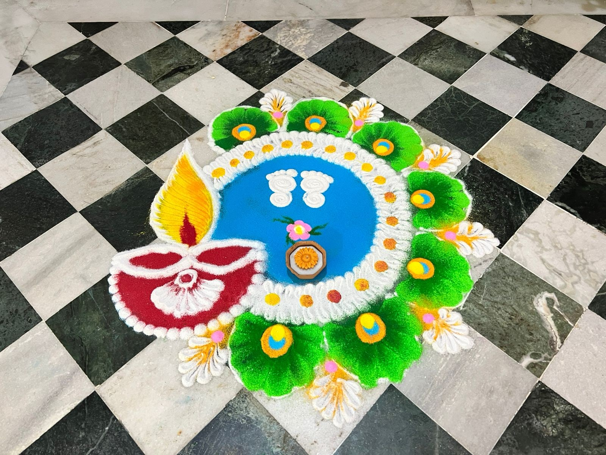
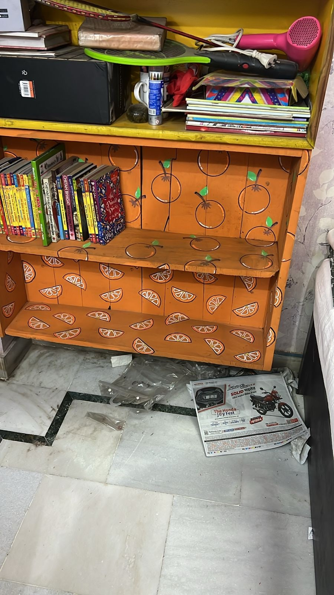
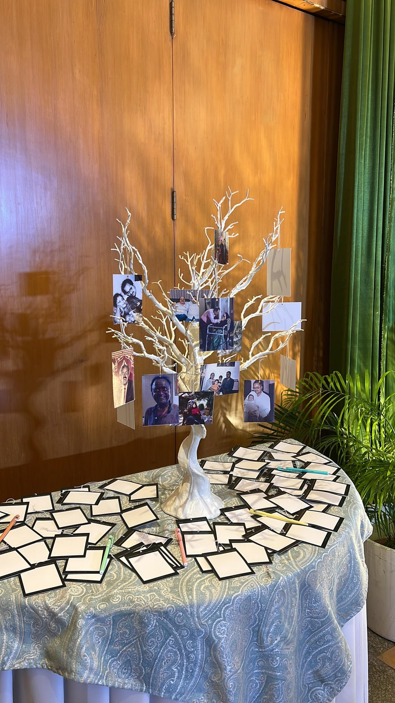
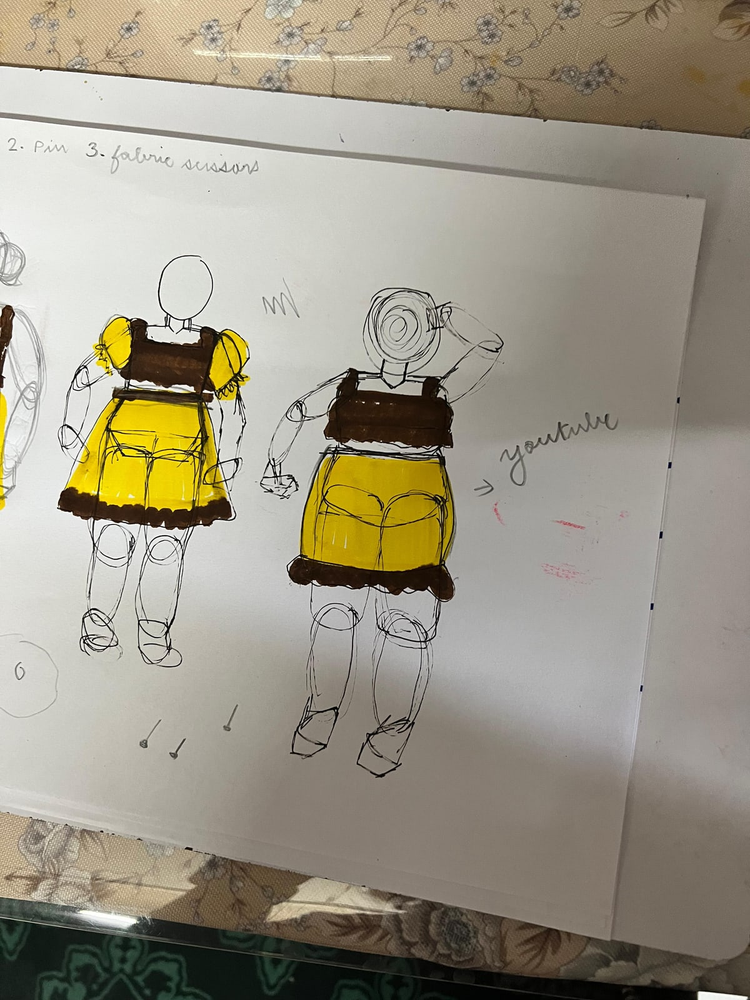
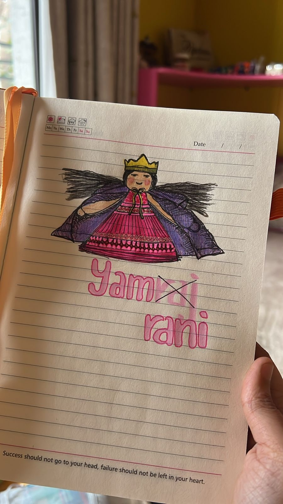
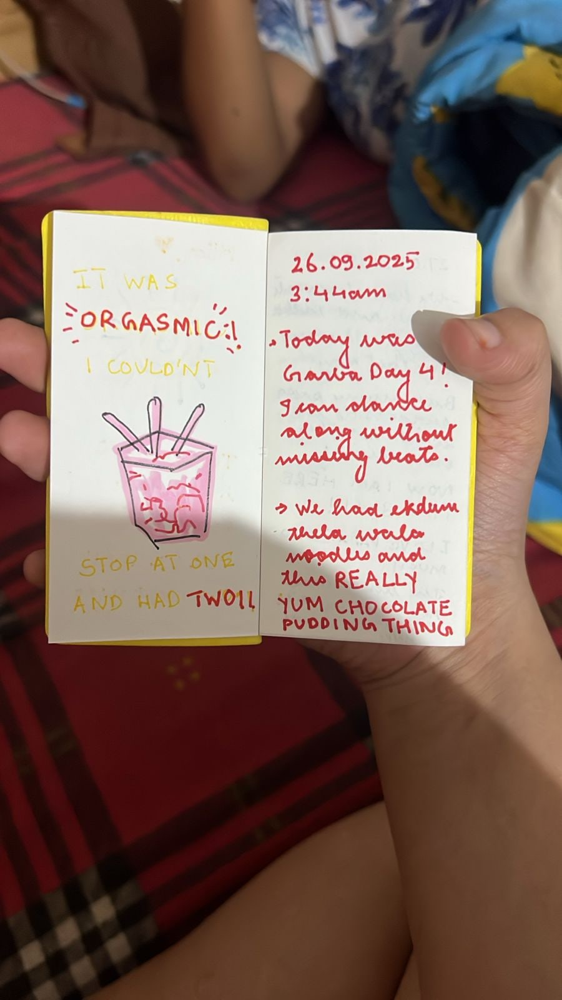
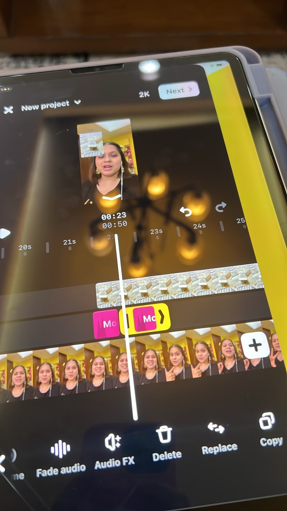
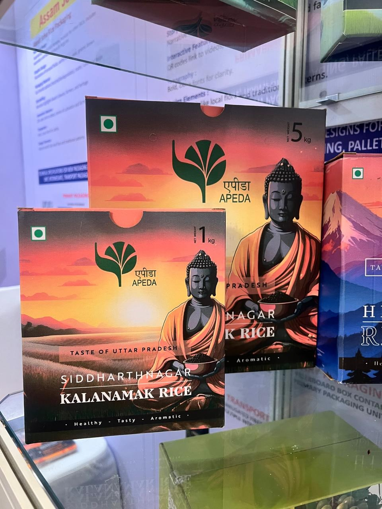
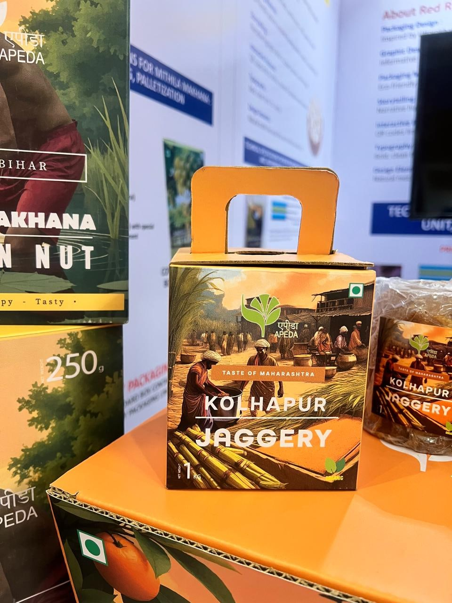
Quilling, clay, knitting, calligraphy, linocut, collage, sewing, pattern making. If it can be made by hand, I've probably tried it.
Not one of these is a specialism, and that's rather the point. Most of them turn up in the work eventually, usually as knowing what a material will actually do before I design something out of it.
Public speaking, debates and elocutions are my cup of tea, and I write short stories for toddlers, which is harder than it sounds. In 2023 I suggested my university should have a literary society, on the grounds that it was strange that it didn't. Three other people agreed, and The Inkwell Society happened. I designed it, coordinated it for a year, and handed it over. It's still going.